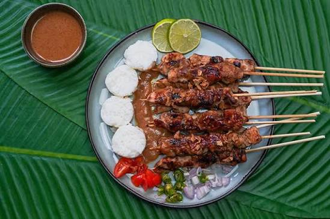

Sepanjang jalan menuju Tawangmangu, deretan warung dengan arang membara dan asap putih yang mengepul adalah pemandangan yang paling khas. Para penjual mengipas tusukan demi tusukan sate dengan sabar, menghasilkan aroma yang sulit ditolak. Dan ketika ditanya apa isinya, jawabannya selalu sama: kelinci — hewan ternak yang justru tumbuh subur di dataran tinggi yang sejuk ini.
Kreativitas yang Lahir dari Kearifan Lokal
Beternak kelinci sudah lama menjadi bagian dari kehidupan masyarakat di kawasan Tawangmangu yang sejuk dan lembab. Kelinci tumbuh subur di sini karena iklimnya yang cocok dan ketersediaan pakan hijau yang melimpah. Dari kebiasaan beternak inilah muncul kreativitas mengolah daging kelinci menjadi sate — menciptakan kuliner khas yang kini menjadi identitas rasa Tawangmangu.
"Awalnya cuma coba-coba mengolah daging kelinci dari ternak sendiri. Sekarang malah jadi yang paling dicari orang kalau ke Tawangmangu."
Fakta Menarik
- Daging kelinci memiliki kandungan protein tinggi dengan lemak lebih rendah dibanding daging ayam maupun sapi
- Bumbu sate kelinci Tawangmangu menggunakan kecap dan rempah Jawa yang dibalurkan sebelum dibakar
- Kuliner ini paling ramai dijual pada akhir pekan saat wisatawan mengunjungi kawasan Tawangmangu
- Beberapa warung sate kelinci telah berdiri lebih dari 30 tahun dan menjadi tujuan kuliner wajib di kawasan ini

Mengapa Penting?
Sate kelinci adalah bukti bahwa identitas kuliner bisa lahir dari adaptasi dan kreativitas terhadap kondisi alam lokal. Ia tidak berasal dari resep leluhur yang tertulis, melainkan dari percobaan dan keberanian mencoba — dan hasilnya adalah sesuatu yang kini menjadi kebanggaan tersendiri bagi masyarakat Tawangmangu.